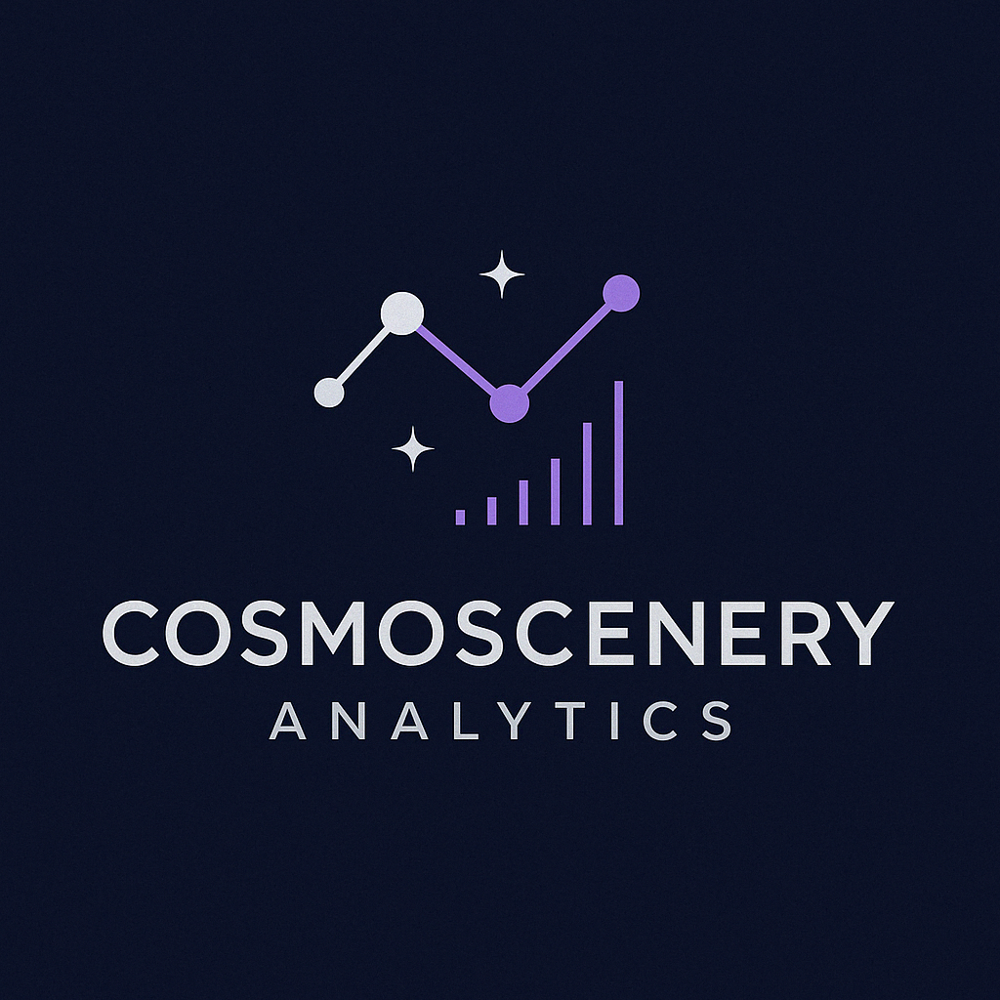

Exploring the universe of data for you
At Cosmoscenery Analytics, we transform complex data into clear, strategic and inspiring decision landscapes, helping companies navigate confidently through the universe of information.
To be recognized as a creative and innovative reference in data analysis, exploring new constellations of knowledge that guide smart and sustainable decisions.
Suzana Alípio
Founder & Data Strategy Consultant
With a background in business strategy and a passion for data-driven insights, Suzana founded Cosmoscenery Analytics to help organizations transform complex information into strategic action. She combines analytical thinking with creativity to uncover meaningful patterns and opportunities.
Would you like to know more or schedule a meeting?